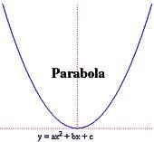
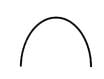

neki bezveze teks koji vam da u word fajlu
Kvadratne jednačine su jednačine oblika: ax2 + bx + c = 0 gde su a,b,c realni brojevi, i a ≠ 0 (to linearna jednačina). Svaka kvadratna jednačina može imati 0, 1 ili 2 realna rešenja izvedena iz formule:
Broj D = b2 - 4ac se naziva "diskriminanta". Ako je D < 0, onda kvadratna jednačina nema realnih rešenja (ima 2 kompleksna rešenja). Ako je D = 0, onda kvadratna jednačina ima jedno rešenje x=−b2ax=−2ab Ako je D > 0, onda kvadratna jednačina ima 2 različita rešenja. Grafik kvadratne jednačine nazivamo parabola. Ako je a > 0, onda ona ima minimum. Ako je a < 0, onda ona ima maksimum. Ako je a = 0 grafik nije parabola nego je prava.
Ako su x1 i x2 koreni kvadratne jednačine ax2 + bx + c = 0 onda: x1+x2=−bax1+x2=−ab x1x2=cax1x2=ac Ove formule se nazivaju Vietove formule. Korene x1 i x2 kvadratne jednačine možemo naći rešavanjem sistema jednačina.